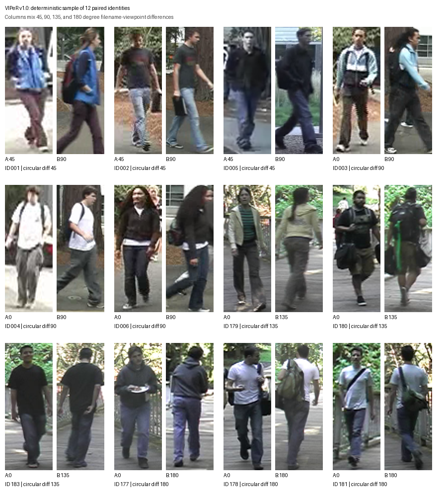
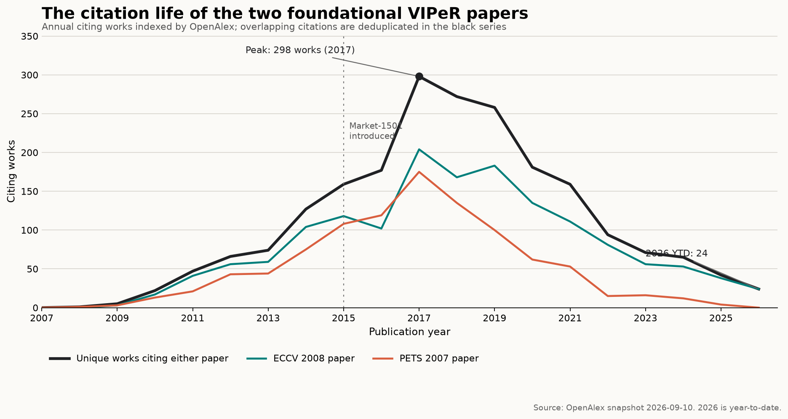

The first results looked like failure. Give an algorithm one grainy image of a person, ask it to find that person in a gallery photographed from another camera, and the simple methods barely escaped the low single digits at rank one. The benchmark was not broken. It was finally measuring the problem we said we wanted to solve.
In 2007, Shane Brennan, Hai Tao, and I released the Viewpoint Invariant Pedestrian Recognition dataset: VIPeR. It contained 1,264 images of 632 people, with one image of each person from each of two cameras. Most matched pairs differed in viewpoint by at least 90 degrees. The images were only 48 pixels wide and 128 pixels tall.1
Those numbers are tiny now. At the time, the combination of size and variation made VIPeR unusually difficult. It became a standard benchmark for person re-identification, helped organize a young research area around a common evaluation, and remained in comparison tables through the hand-crafted-feature, metric-learning, and early deep-learning eras.
It also sits at the beginning of a decision I made not to continue in surveillance research. Nearly twenty years later, I want to preserve both parts of that history: what made the dataset scientifically useful, and why I eventually became uncomfortable with the purpose it served.
A benchmark designed to make the numbers worse
I came to computer vision through crowd counting as an undergraduate at UC Santa Cruz. The footage made something obvious: people do not present themselves to cameras as tidy frontal portraits. They turn, walk away, carry things, cross one another, move between shade and sunlight, and appear under whatever camera geometry a real environment happens to have.
Yet pedestrian-recognition results of the period were often demonstrated on evaluations that seemed built to produce attractive accuracy. One comparison set contained only 44 people and was dominated by frontal views. A later extension added 99 people, but still did not represent the viewpoint changes that made the real problem hard.2
I wanted an evaluation that would not let us hide from that mismatch. We hired an undergraduate to help capture footage. I built an annotation tool for drawing boxes around pedestrians and establishing the identity correspondences between cameras. We chose breadth of identities and viewpoint variation over a setup that existing methods could solve.
The work was more physical than the final paper makes it sound: collect video, inspect frame after frame, find the same person in another camera, draw the boxes, check the match, and repeat. The resulting dataset had exactly two observations per person. That sparseness made every nuisance factor matter.

A deterministic sample of 12 identity pairs from the audited VIPeR v1.0 archive. Each pair contains one image from each camera; the subjects were notified that cameras were present and were not coached.1
The initial evaluation used cumulative matching characteristic curves: for each probe image, rank all gallery images and ask where the correct person appears. The paper prescribed five rounds of two-fold cross-validation. In each round, the 632 identities were randomly divided into two groups of 316, train and test were reversed, image order and mirroring were randomized, and the gallery and probe roles were swapped and averaged.1
That detail matters for the historical record. There were no canonical identity split files in the original ZIP. The protocol was randomized 5x2 cross-validation. A modern re-release can generate and record seeded folds for reproducibility, but it should not call them original splits.
When difficulty looked like a publication problem
My memory of the early reviews is that the dataset sometimes looked too hard to be useful. If rank-one accuracy sat near zero, perhaps the experiment was not demonstrating progress at all. That reaction was understandable, but it inverted the point. The existing evaluations had compressed the problem until ordinary techniques looked effective. VIPeR expanded it again.
The baseline appearance models in the 2007 PETS paper began in the low single digits at rank one. In the 2008 ECCV paper, our learned Ensemble of Localized Features reached about 12 percent rank-one accuracy. At rank 10 percent, meaning the correct identity appeared somewhere in the first 32 results of a 316-person gallery, performance was about 70 percent.2
Twelve percent is not a triumphant number. It was evidence that a learned representation could recover real signal while leaving most of the problem plainly unsolved. That is a healthier starting point for a field than a small demonstration already approaching saturation.
A dataset becomes a common language
VIPeR's influence was not one algorithm or one number. It gave researchers a compact, public test of the same underlying question: can an appearance model survive a large viewpoint change when it has almost no examples of each person?
Early follow-on work developed more robust hand-crafted color, texture, symmetry, and local-feature representations. The center of gravity then shifted toward metric learning: learning the comparison function itself from pairs or rankings. By the mid-2010s, Siamese networks, triplet losses, part-based models, transfer learning, and domain adaptation had moved person re-identification into the deep-learning era.
A 2016 historical survey called VIPeR the field's most studied dataset and traced representative rank-one performance from our 12 percent result in 2008 to 63.9 percent by 2015.3 An ECCV 2018 paper later reported 99.8 percent on the legacy benchmark. That claim is part of the published record, but it should not be read as a smooth story from one percent to a solved real-world problem. Training data, external representations, post-processing, and repeated randomized protocols differed. More importantly, the field had outgrown what VIPeR could measure.

Annual works indexed by OpenAlex that cite either foundational VIPeR paper, with overlapping citations deduplicated. The series peaked at 298 works in 2017. This is a September 10, 2026 snapshot; the final point is year-to-date.4
The citation curve shows a benchmark moving through a field's life cycle. Attention grew as metric learning matured, peaked during the transition to deep and domain-adaptive methods, and declined as larger datasets replaced it. OpenAlex indexes 2,144 distinct works citing at least one of the two foundational papers in this snapshot. Google Scholar counts are higher, but the two systems should not be mixed into one total.
Being superseded was part of the success
VIPeR had hand-drawn crops, two cameras, one image per identity per camera, and only 316 training identities in each fold. Those constraints made it an excellent early stress test and a poor approximation of deployment.
Market-1501 made the next gap explicit. It introduced more than 32,000 detector-produced boxes for 1,501 identities across as many as six cameras, then tested retrieval with much larger galleries and distractors.5 MARS extended the task to video tracklets.6 Later benchmarks added occlusion, seasons, infrared imagery, text descriptions, open-set identities, domain shift, and the detection failures that a closed-world crop benchmark excludes.
This is what a good benchmark should eventually do: expose a limitation clearly enough that the next generation of datasets has to address it. The field did not simply drive a number toward 100 percent on VIPeR. It changed the definition of a credible experiment.
What the work was for
I started at UC Santa Cruz about a week after September 11, 2001. In the years that followed, security was routinely framed as something worth exchanging privacy for. We took off our shoes at airports. Funding and technical energy moved toward surveillance. By the time I began learning computer vision in earnest in 2004, tracking people across cameras felt like a normal and important research objective.
The papers reflect that period without euphemism. The 2007 paper opens by placing recognition, reacquisition, and tracking inside video surveillance. The 2008 paper describes searching a camera network for a person of interest and says that the ultimate aim of automated surveillance was to remove the human operator.12
A few years into my Ph.D., I began to doubt the ethical premise. Before advancing to candidacy in 2008, I changed my proposed dissertation title to Privacy Preserving Pedestrian Recognition. I wanted to believe the technical work could contain its own safeguard.
I eventually ran into a boundary I could not optimize around: whether people should be tracked was not fundamentally a modeling question. A system could omit faces, encrypt features, keep data decentralized, or satisfy a formal privacy definition. None of those choices answered who had permission to follow a person across a city, for what purpose, under what oversight, or with what recourse.
Privacy is not a loss function
At the same time, my adviser, Hai Tao, was building Vion in China. Vion's own materials now describe products for electronic policing, public safety, smart-city governance, transportation, and commercial analytics. A 2024 Vion article explicitly credits Hai and me with VIPeR, defines person re-identification as matching people across time and place to reconstruct movement trajectories, and presents the avoidance of face, iris, and gait features as a privacy benefit.78
I cannot establish a direct chain from the VIPeR archive to a particular government deployment or tracked individual, and I do not want to imply one. What I can say is that the techniques I was helping develop were moving from papers toward systems for tracking people across camera networks, including markets I no longer wanted to support. Vion's later account tracing its re-identification work back to VIPeR made that connection harder for me to treat as abstract.
This was one of several reasons I never completed the Ph.D., and probably one of the larger ones. The scientific question still interested me. The policy decision embedded in the application did not.
Technical privacy work remains valuable. Current research asks how to train across isolated data, protect visible and infrared imagery, or reduce access to identifiable information.9 Those methods can reduce harm. But a privacy-preserving implementation of an illegitimate policy is not, by itself, a legitimate system. A reconstructed trajectory does not become private merely because the model did not use a face.
Why preserve VIPeR now?
The original VIPeR v1.0 archive is still intact. I recovered the 18.84 MB ZIP, verified that its historical MD5 matches the value preserved by Open-ReID, computed a modern SHA-256 checksum, and audited all 1,264 images. The archive contains 632 complete camera pairs and the original README. It does not contain fixed split files, a license, or a modern dataset card.
I plan to preserve the exact historical ZIP unchanged and place present-day documentation beside it: provenance, checksums, the original 5x2 protocol, a seeded reproduction of that protocol, limitations, intended and unsupported uses, and a takedown path. The 2007 PETS paper should remain the work users cite. A repository or archival DOI can identify the maintained release without rewriting its history.
Re-releasing the dataset is not an argument for deploying person re-identification. It is an argument for maintaining the scientific record honestly. VIPeR is both a technical artifact that helped a field learn how to measure itself and a product of a political moment in which surveillance ambitions often passed as neutral engineering goals.
Nearly twenty years later, I am proud that we made the evaluation harder. I am less comfortable with how easily I accepted the purpose behind it. Both things are true, and preserving the work responsibly means leaving room for both.
Sources and notes
- D. Gray, S. Brennan, and H. Tao, “Evaluating Appearance Models for Recognition, Reacquisition, and Tracking”, PETS 2007.
- D. Gray and H. Tao, “Viewpoint Invariant Pedestrian Recognition with an Ensemble of Localized Features”, ECCV 2008.
- L. Zheng, Y. Yang, and A. G. Hauptmann, “Person Re-Identification: Past, Present and Future”, 2016.
- OpenAlex records for the PETS 2007 paper and ECCV 2008 paper. The chart deduplicates works that cite both.
- L. Zheng et al., “Scalable Person Re-Identification: A Benchmark”, ICCV 2015.
- L. Zheng et al., “MARS: A Video Benchmark for Large-Scale Person Re-Identification”, ECCV 2016.
- Vion Technology, article on its re-identification patents and history, 2024 (Chinese).
- Vion Technology, company history, and the Beijing Security and Protection Industry Association, Vion company profile (Chinese).
- Y. Jiang et al., “From Laboratory to Real World: A New Benchmark Towards Privacy-Preserved Visible-Infrared Person Re-Identification”, CVPR 2025.